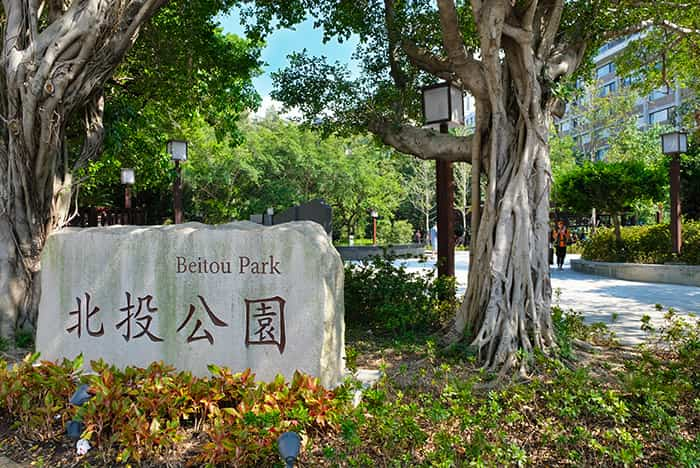
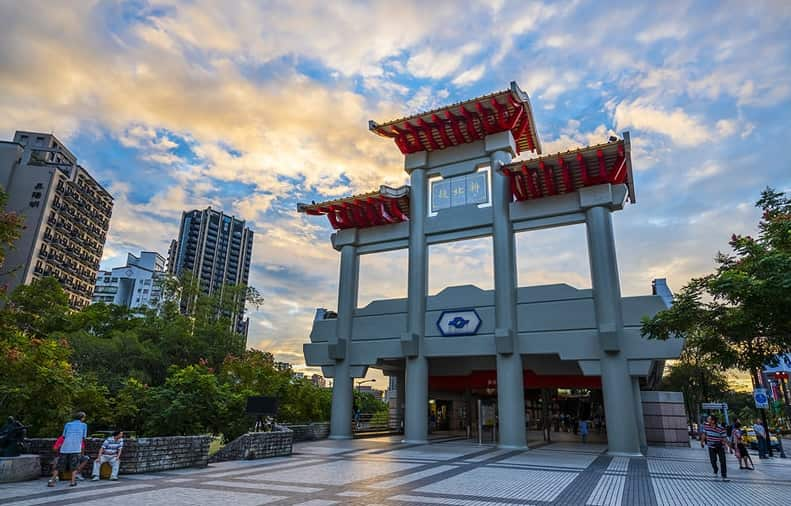

玖拾年代
西門站-現今風貌

周圍景點-北投公園
北投公園，是位於臺北市北投區的一座露天溫泉公園，經緯度為25.136260,121.506290，公園範圍是由中山路、光明路所圍繞之區域，面積總達6萬1,129平方公尺，乃繼圓山公園和臺北新公園（現今二二八和平紀念公園）之後，臺北市的第三座公園，亦為臺灣第一座溫泉公園。 因日治臺灣時期興建新北投鐵路是為便於旅客前往泡湯，北投公園也因此別稱新北投公園，現在其管理單位為陽明山公園管理所。
“2009年，北投公園，更興建了「跳泉」，那是能配合燈光、音樂做出韻律的水舞。這座公園內尚有北投圖書館、溫泉博物館、梅庭、地熱谷、北投溪等景點；在圖書館前的噴水池在電影《向左走、向右走》曾被入鏡，為該部電影的男女主角初遇之地。”

小知識

新北投站
1916年4月1日：隨著新北投線鐵路正式通車而啟用，當時稱為「新北投停車場」，以台灣紅檜木為主要建材，屋頂闢有四座對稱的雕花氣窗與三孔老虎窗形式。 1937年：擴建增為四個老虎窗圓孔，建築形式沿用至今，為台灣經典建築。改建過後的第二代站房落成，車站與軌道呈「T」字型垂直布設，十分特別。過去以單節汽油客車往返於本站與北投車站間，戰後改以單節柴油客車行駛。
“經建築師李重耀的牽線，台北市政府以象徵性的一元價格，將新北投車站賣給彰化的台灣民俗村。”
小知識